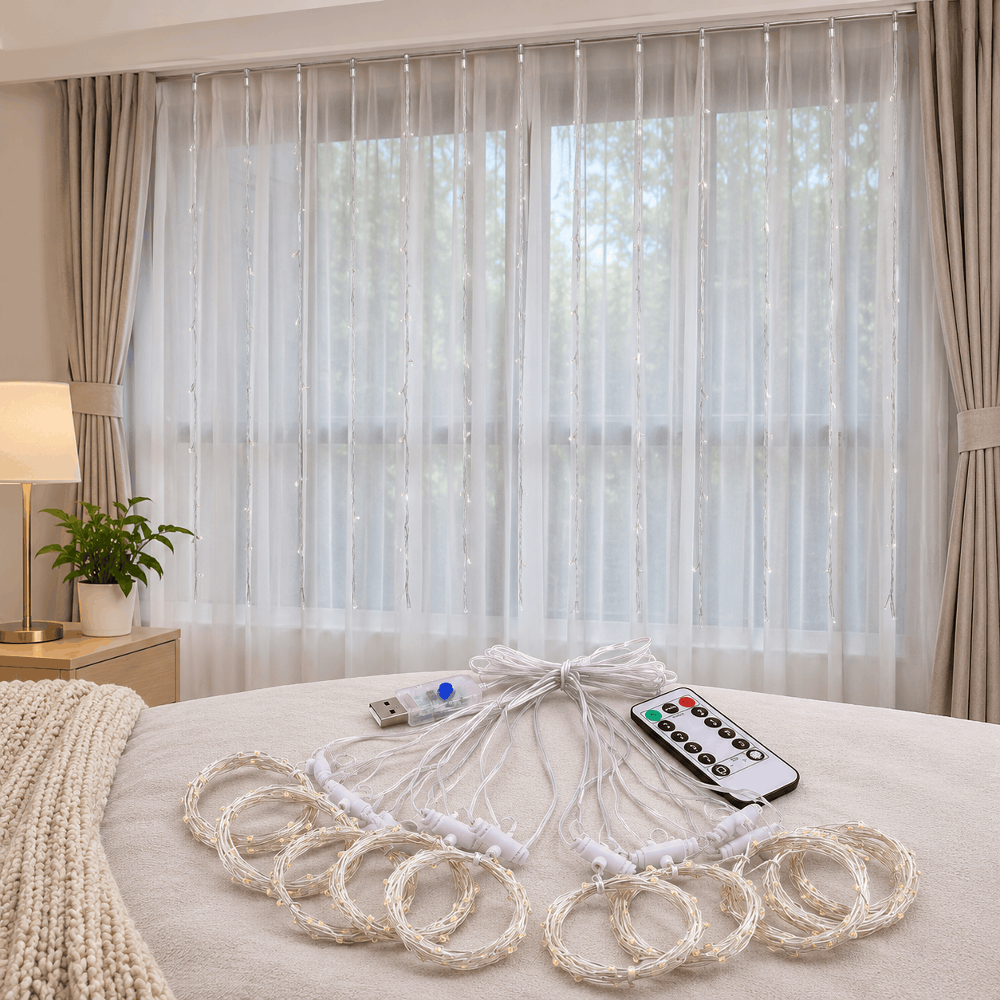

Instalație Luminoasă LED Tip Perdea pentru Fereastră
Instalația luminoasă LED tip perdea, cu șiruri suspendate și lumină alb cald, este un accesoriu decorativ conceput pentru iluminarea ambientală a ferestrelor, perdelelor și diferitelor spații interioare.
Prețul și stocul sunt afișate conform catalogului furnizat. Confirmă disponibilitatea, cantitatea și condițiile comerciale înainte de comandă.
DETALII PRODUS
Descriere
Instalația luminoasă LED tip perdea, cu șiruri suspendate și lumină alb cald, este un accesoriu decorativ conceput pentru iluminarea ambientală a ferestrelor, perdelelor și diferitelor spații interioare. Produsul utilizează mai multe fire verticale prevăzute cu LED-uri de mici dimensiuni, dispuse astfel încât să creeze un efect luminos uniform și elegant.
Sistemul de alimentare prin USB și telecomanda inclusă permit controlul iluminării într-un mod practic, fără a necesita manipularea directă a întregii instalații după montare.
Datorită designului flexibil, cu fire subțiri și elemente luminoase discrete, instalația poate fi integrată în amenajări rezidențiale, decoruri festive și spații comerciale, completând atmosfera printr-o iluminare ambientală decorativă.
Iluminare ambientală cu efect de cascadă luminoasă
Elementul distinctiv al instalației este structura formată din mai multe șiruri LED care coboară vertical, creând un efect vizual asemănător unei perdele de lumini.
LED-urile sunt distribuite de-a lungul firelor, oferind puncte luminoase individuale care contribuie la obținerea unui decor strălucitor.
Lumina alb cald creează o atmosferă plăcută și primitoare, fiind potrivită pentru spațiile în care se dorește o iluminare decorativă, fără utilizarea unor corpuri de iluminat voluminoase.
Instalația poate fi amplasată în apropierea perdelelor transparente, unde lumina se reflectă discret pe material și accentuează aspectul decorativ al încăperii.
Sistem de control prin telecomandă
Produsul este prevăzut cu o telecomandă pentru controlul funcțiilor de iluminare, oferind posibilitatea utilizării instalației fără accesarea permanentă a modulului de alimentare.
Telecomanda ilustrată dispune de mai multe butoane destinate operării sistemului LED.
Această configurație permite utilizatorului să controleze funcțiile disponibile ale instalației, în funcție de modul de funcționare prevăzut de producător.
Avantajele utilizării telecomenzii:
- Controlul instalației de la distanță.
- Operare practică după montarea șirurilor luminoase.
- Acces la funcțiile de iluminare disponibile.
- Utilizare simplificată în amenajările decorative.
- Adaptarea funcționării la preferințele utilizatorului.
Numărul exact al modurilor de iluminare, funcțiile de reglare a intensității și existența unui temporizator trebuie confirmate din specificațiile produsului.
Alimentare USB pentru utilizare practică
Instalația dispune de un conector USB, conceput pentru conectarea la o sursă de alimentare compatibilă.
Această soluție permite alimentarea sistemului LED fără utilizarea directă a unei conexiuni clasice la priză, dacă este disponibilă o sursă USB corespunzătoare.
În imaginile produsului se observă cablul de alimentare cu mufă USB și un modul de control integrat.
Caracteristici ale sistemului de alimentare:
- Conector USB pentru alimentare.
- Modul de control integrat pe cablu.
- Conectare la surse USB compatibile.
- Sistem electric pentru iluminare decorativă.
- Cabluri subțiri, concepute pentru integrare discretă.
Alimentatorul de priză nu trebuie considerat inclus decât dacă acest lucru este confirmat de furnizor.
Design flexibil pentru decorarea ferestrelor și perdelelor
Structura instalației permite distribuirea șirurilor luminoase pe verticală, fiind potrivită pentru amenajări în care se urmărește obținerea unei suprafețe iluminate decorative.
Firele subțiri contribuie la menținerea unui aspect discret atunci când instalația nu este aprinsă, în timp ce LED-urile evidențiază aranjamentul după activare.
Produsul poate fi poziționat în apropierea perdelelor, pe suprafețe de susținere compatibile sau în cadrul unor decoruri speciale.
Elementele de prindere prezentate în imagini ilustrează posibilitatea organizării șirurilor luminoase astfel încât acestea să fie distribuite vertical.
Instalarea trebuie realizată fără tensionarea excesivă a cablurilor și cu respectarea instrucțiunilor producătorului.
Aplicații decorative în spații rezidențiale și comerciale
Instalația LED tip perdea este destinată realizării unor efecte de iluminare ambientală, putând fi integrată în diferite tipuri de amenajări interioare.
1. Decorarea ferestrelor
Șirurile luminoase pot fi distribuite în fața perdelelor sau în apropierea geamurilor pentru crearea unui fundal luminos.
2. Amenajarea dormitoarelor
Lumina alb cald poate completa decorul încăperii, contribuind la realizarea unei atmosfere ambientale relaxante.
3. Decorațiuni de Crăciun
Instalația poate fi utilizată alături de brazi artificiali, globuri și alte accesorii festive, pentru completarea decorurilor de sărbători.
4. Evenimente și petreceri
Șirurile LED pot fi integrate în decoruri fotografice, aranjamente pentru aniversări și alte evenimente desfășurate în spații interioare.
5. Vitrine comerciale
Produsul poate fi utilizat pentru iluminarea decorativă a vitrinelor, showroom-urilor și zonelor de prezentare.
6. Restaurante și spații de ospitalitate
Lumina decorativă poate completa amenajările ambientale în spații în care se dorește un efect vizual cald și elegant.
Specificații tehnice și caracteristici
- Tip produs: instalație luminoasă LED decorativă.
- Categorie: decorațiuni luminoase și accesorii pentru iluminat ambiental.
- Model: instalație LED tip perdea.
- Configurație: șiruri luminoase suspendate vertical.
- Tehnologie iluminare: LED.
- Culoare lumină: alb cald.
- Efect vizual: cascadă de puncte luminoase.
- Sistem de control: telecomandă.
- Alimentare: prin conexiune USB.
- Conector: USB.
- Modul de control: integrat pe cablul de alimentare.
- Tip cabluri: fire subțiri, flexibile.
- Distribuție LED-uri: de-a lungul șirurilor suspendate.
- Destinație: iluminare decorativă și ambientală.
- Utilizare recomandată: interior.
- Amplasare: ferestre, perdele și suprafețe de susținere compatibile.
- Stil decorativ: modern, festiv și ambiental.
- Utilizare sezonieră: potrivită inclusiv pentru decorațiuni de Crăciun.
- Caracter reutilizabil: concepută pentru utilizări repetate, cu întreținere corespunzătoare.
- Întreținere: conform recomandărilor producătorului.
- Dimensiuni: de confirmat conform specificațiilor furnizorului.
- Număr LED-uri: de confirmat.
- Lungimea și numărul șirurilor: de confirmat.
- Grad de protecție IP: nespecificat.
- Accesorii ilustrate: telecomandă și cablu de alimentare USB.
Comandă și informații
Site-ul funcționează în regim de catalog B2B. Nu există plată online sau coș de cumpărături.
Discută pe WhatsApp →DIN ACEEAȘI CATEGORIE